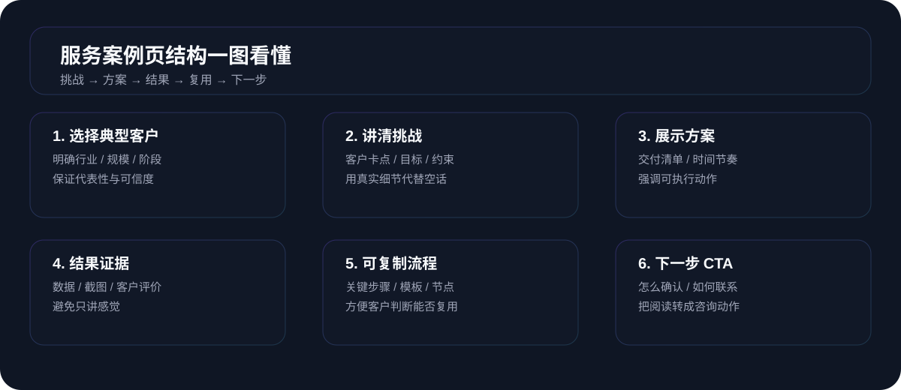

一人公司官网作品集页怎么写：别只堆截图，先让人一眼看懂你擅长什么、做过什么、能为他做到什么
很多一人公司官网的“作品集”还停在把截图、Logo 和项目标题一股脑堆在一起：访客翻了半天，只知道你干过很多事，却不知道你到底擅长什么、帮过哪些典型客户、如果找你合作大概会发生什么。真正有用的作品集页，应该是帮高意图访客快速判断“我要不要继续聊、你是不是对的人、下一步怎么开始”的决策页面，而不是一个美术馆。
这轮先看了 Webflow Blog《23 portfolio website examples, plus best practices to attract clients》、Colorlib《18 Best Portfolio Website Examples 2026》 和 Site Builder Report《Portfolio Websites: 25+ Inspiring Examples (2026)》。把这三篇拆开看，会发现一个共识：真正转化好的作品集页，几乎都在帮访客做这三件事：
- 迅速定位你是谁、擅长什么、适合谁——不是让人自己猜你到底做设计、开发、文案还是全都做。
- 用少量但高质量的案例讲清“问题 → 解法 → 结果”——Webflow 特别强调“curate & provide context & show impact”，不是把所有作品塞满。
- 给出清晰的下一步——Colorlib 与 Site Builder Report 展示的优秀作品集几乎都会在案例附近放上“See project / Work with me / Start a project”这一类 CTA，不让用户看完就散。
对一人公司 / 小团队来说，作品集页不是“把作品放上去就完了”，而是你所有营销动作最后收口的关键一页：访客带着具体项目和预算来，点进这页后要么决定继续聊，要么优雅退出——而不是继续犹豫。

这轮搜索里，最值得直接吸收的 3 个作品集写法
| 参考来源 | 标题角度 / 开头写法 | 模块结构 | CTA 与关键词覆盖 |
|---|---|---|---|
| Webflow Blog 23 portfolio website examples |
不是直接丢 23 个链接，而是先给出 6 条通用原则：多样化作品、质量优先、讲清上下文、持续更新、展示结果、表达个人风格，再用案例去印证这些原则。 | 开头是 6 个 portfolio tips → 23 个案例，每个案例都有“是谁 / 做什么 / 为什么值得看”→ 结尾再给“用 Webflow 搭作品集”的 CTA。 | 高频词集中在 design portfolio, attract clients, best practices, web design project 等，强调“作品集是获客工具，而不是作品墙”。 |
| Colorlib 18 Best Portfolio Website Examples 2026 |
用“best portfolio website examples”做主关键词，但开头先讲“想要更多线索、想在线上建立声誉、想拿到更适合你的工作，就要有在线作品集”。 | 总述在线作品集的价值 → 逐个案例展示（Yasio、Steven Mengin 等），每个案例都有一句 What stands out 点出亮点：比如作品优先、动画质感、导航干净。 | 关键词围绕 portfolio websites, career growth, brand awareness 展开，CTA 多为“去看这个站点”“用某某主题/模板搭自己作品集”。 |
| Site Builder Report Portfolio Websites: 25+ Inspiring Examples |
直接用“Portfolio Websites: 25+ Inspiring Examples (2026)”做标题，搜索意图非常明确：给想搭 portfolio 的人一批可抄结构。 | 按类型分：营销代理、创意总监、摄影师、婚礼摄影、艺术家、UX 设计师、室内设计机构等。每个案例都会讲清楚：首页怎么排、作品集页怎么分类、如何在案例页讲故事。 | 大量出现 portfolio, case study, small business website, UX portfolio 等词，同时每个案例都标清楚服务类型和 CTA（Request Pricing, View Project, Contact 等）。 |
把这些案例串起来看，其实已经给了一人公司官网一条很清晰的方向：作品集页的任务不是“展示全部作品”，而是“用少量代表性项目，把你的能力、风格和结果讲清楚，并让真正合适的人继续往下走”。
为什么一人公司官网更需要作品集页，而不是一堆散落案例
1）你需要一个“集中判断页”，而不是“到处零散的案例链接”
很多一人公司会在首页、About、博客、朋友圈各处散落一些案例截图，但缺一个集中入口让访客快速看全貌。优秀的 portfolio websites 基本都把“作品 + 结果 + CTA”收在一个可导航的入口里，让访客可以按类型、行业或问题快速浏览。
2）作品集页是你过滤客户预期的最好地方
Webflow 与 Site Builder Report 展示的很多作品集，都很强调“项目规模、合作方式、结果指标”。对一人公司来说，这意味着你可以在作品集页里提前讲清楚：你更擅长哪类项目、通常以什么节奏合作、哪些情况暂时不适合你，减少之后沟通的误差。
3）它能把“个人故事”变成“客户能理解的价值”
Colorlib 里的不少案例，都会在作品集页里穿插一点创作者的性格和偏好，但不是写成长篇自传，而是用简短的故事告诉访客：你怎么解决问题、你在意什么、你习惯怎样沟通。这类信息对决定“要不要把项目交给你”的访客很关键。
更适合一人公司官网的作品集页：建议拆成这 6 个模块
模块 1：Hero 先说“你是谁 + 擅长什么 + 典型客户是谁”
参考 Webflow 与 Site Builder Report 里那些做得好的个人作品集，第一屏通常都会清楚写出：
- 你是什么角色（例如“一人公司官网与内容系统设计师”）；
- 你主要做哪几类工作（官网结构 / 内容生产 / 承接流程 / AI 团队落地等）；
- 你典型服务的对象是谁（例如“已经有业务、但官网不转化的一人公司 / 小团队”）。
对一人公司来说，一个更实用的 Hero 文案骨架可以是：
标题：我帮一人公司把“随便搭的网站”，改成“能稳定收咨询的官网作品集系统”。
副标题：下面这些项目，来自已经在跑业务的一人公司和小团队：他们原本有网站、有内容、有客户，但官网不转化、入口不清晰、案例讲不清。我的工作，是把它们收成一条从“看作品 → 信任你 → 联系你”的路径。
主 CTA：直接约一次 15 分钟评估，看看你的现有站点适不适合先从作品集页动手。
模块 2：按“问题 / 服务类型”对作品集做轻量分类
Site Builder Report 里很多作品集都会按服务类型或行业分类，例如“Social Elevation / Content Creation / PR + Events / Graphic Design”。对一人公司来说，不必上来就做复杂筛选器，但可以先做到：
- 把案例按问题类型分：例如“首页不转化→改版”“联系页没人发消息→重写”“内容散乱→收成内容中枢”“AI 工具装了不落地→重构 workflow”；
- 或者按服务类型分：官网重构 / 内容系统设计 / OpenClaw + 飞书接入 / 私域承接链路等。
每个分类区块里，可以先用 1-2 句说明“这一类项目在解决什么问题”，再列出 2-4 个代表性案例，而不是把所有项目平铺。
模块 3：单个案例的文案结构，优先用“问题 → 解法 → 结果 → 下一步”
Webflow 的文章特别强调“provide context and insights”“demonstrate results and impact”。结合一人公司场景，一个案例可以写成这样：
- 背景 & 问题：客户是谁、当时遇到的真实卡点是什么（例如“有流量、有文章，但没人愿意发第一条消息”）。
- 你做了什么：你改了哪些页面、怎么重排结构、怎么把内容和承接接上，不需要写成技术说明书，但要让人看懂思路。
- 具体结果：哪怕只是“咨询率提升 30%”“FAQ 页平均停留时长增加”“第一次消息更容易发出来”这类定性 + 定量结合的结果。
- 如果访客也有类似问题，该先看哪一页 / 做哪一步：把作品集直接接回你的解决方案页或联系页，而不是只写一句“欢迎咨询”。
模块 4：用一小段“过程 & 合作方式”降低陌生感
在很多作品集案例里，Site Builder Report 会特别强调“合作是怎么进行的”“客户在哪个阶段参与”。对一人公司来说，你可以简短写清楚：
- 典型项目会经历几步（例如“诊断 → 结构 / 内容方案 → 联合验证 → 上线复查”）；
- 你希望客户准备哪些东西（当前站点、流量截图、关键页面、最卡的 1 条流程）；
- 你更偏向怎样的沟通方式（异步为主 / 固定节奏复盘等）。
这些内容可以放在作品集页的“如何和我合作”小模块里，也可以作为单个案例页的尾部补充，让访客感觉“这不是一次性项目，而是一套跑得起来的协作方式”。
模块 5：在作品集中预埋 1 个主 CTA + 1~2 个轻量继续动作
优秀 portfolio websites 很少在一个页面底部堆满 5、6 个 CTA。更常见的做法是：
- 保留一个主继续动作，比如“Start a project / Work with me / Request pricing & availability”；
- 再给 1~2 个轻量动作，例如“先看完整案例页”“先看 FAQ”“先看服务流程”。
对一人公司官网来说，你可以把作品集页的收口设计成：
主 CTA：把你现在的网站链接 + 最卡的 1 步发给我，先做一次 15 分钟适配判断 →（链接到 contact.html，对应当前联系页的首条消息模板）。
轻量 CTA 1：如果你还不确定该从首页、联系页还是 FAQ 动手，先看《客户案例页怎么写》这篇完整拆解。
轻量 CTA 2：如果你更关心“改完能不能撑得住价格和咨询”，先看《客户评价页怎么写》。
模块 6：预留“更新空间”，让作品集看起来在持续跑
Webflow 的建议里有一条是“Update regularly”，并建议在作品里标注时间，帮助访客理解你能力的演化。一人公司官网可以这么做：
- 按年份分段，例如“最近 12 个月 / 早期项目”，避免让人怀疑你只做过几单；
- 在每个案例上标注大致时间或发布时间；
- 把与当前网站主线更贴近的案例放在前面，弱相关的放在“更多项目”或归档里。
给一人公司可直接套用的作品集页文案骨架
页面标题：作品集：这些项目，专门帮一人公司把“随便搭的网站”变成“能持续收咨询的官网系统”。
开头三句：
- 我不做“看完很好看，但不知道该不该联系你”的作品集，只做能帮你判断“值不值得聊”的案例页。
- 下面这些项目，来自已经在跑业务的一人公司和小团队：他们要么有网站不转化，要么有内容不承接，要么有 AI 工具没落地。
- 每个项目都会讲清楚：之前卡在哪、我们怎么改、上线后发生了什么、如果你也有类似问题，该先做哪一步。
分类标题示例：首页和首屏改版 / 联系页 & 表单 / FAQ & 信任层 / OpenClaw + 飞书接入 / 内容系统与资源中心。
上线后，该盯哪些数字判断作品集页有没有真在“帮你成交”
作品集页本身通常不会是最高曝光入口，它更多承担“中腰部决策页”的角色。早期可以先看：来自首页 / 解决方案 / 文章内链跳转到作品集的会话数，目标是当日或当周被真实访问 30–80 次；随着内容与 SEO 链路完善，再拉到 100+。
如果作品集页已经从“堆截图”变成“问题 → 解法 → 结果 → 下一步”的结构，通常会看到：从作品集跳到 联系页 或 解决方案页 的点击率能稳定在 8%–15% 以上；若低于 5%，优先检查 CTA 是否明确、案例是否说清了结果。
可以重点看两组：看过作品集后 7 天内发起咨询的比例，以及从作品集跳到联系页后真正发出首条消息的比例。对一人公司来说，前者能达到 2%–4% 就已经很可观；若远低于这个区间，通常是案例没有选对、没有讲结果，或者 CTA 太模糊。
本方案风险：如果你只是把现有案例搬到一个新页面上，换了个更好看的模板，却没有补“问题 → 解法 → 结果 → 下一步”的文案结构，也没有把案例直接接回解决方案页与联系页，作品集页还是只会变成新的“好看画廊”；若出现这种情况，则调整为：先删掉不具代表性的案例，优先选 5–9 个能讲清结果的项目，给每个案例补背景、过程和结果，并在页内埋好 1 个主 CTA + 1~2 个轻量继续动作，再考虑增加数量与动效。
最后一句：一人公司的作品集页，应该帮访客做决定，而不是展示你有多忙
如果你已经有一堆项目、截图、链接，却迟迟没有把它们收成一页真正能用的作品集，往往不是“素材不够”，而是没有把这页当成决策工具。对一人公司来说，作品集页最关键的任务是：帮访客在有限时间内看懂你擅长什么、服务过谁、能为他做到什么，以及现在最值得他做哪一步。只要这件事成立，你的作品集页就已经比绝大多数“堆图墙”有用得多。
如果你现在有很多零散案例，却不知道该怎么收成一页作品集
先别急着找新模板或新主题。先把你现在的网站链接、现有案例列表和最卡的那 1 条业务流程整理出来，发到联系页里，我们可以先用 15 分钟帮你判断：是该先补作品集页，还是先补首页 / 联系页 / FAQ。很多时候，把作品集收好，比再多写几篇文章更快看到咨询上的变化。
先用 1 条消息发来你现有的网站和案例 →一人公司官网需要单独做作品集页吗？
从转化角度看，强烈建议单独做一页。你可以在首页、About、解决方案里放少量代表案例，但仍需要一个集中入口，让访客按问题类型或服务类型快速浏览，并配好统一的 CTA。这样比在多个页面零散堆案例更容易形成清晰判断。
作品集要放多少个案例才合适？
参考 Webflow 的建议：质量优先于数量。对一人公司来说，第一版作品集页有 5–9 个结构完整、结果清楚的案例通常就足够了。后续可以按季度更新，把更老、弱相关的案例迁移到归档或隐藏入口。
作品集里的数字一定要非常精确吗？
不需要所有案例都给到两位小数，但建议至少给出方向明确的指标：例如“咨询量提升约 30%”“FAQ 页跳出率明显下降”“首页停留时长从 30 秒拉到 90 秒以上”。如果暂时没有很好看的数字，也可以先从“之前卡在哪 / 改完用户行为有什么变化”写起，再逐步补数据。